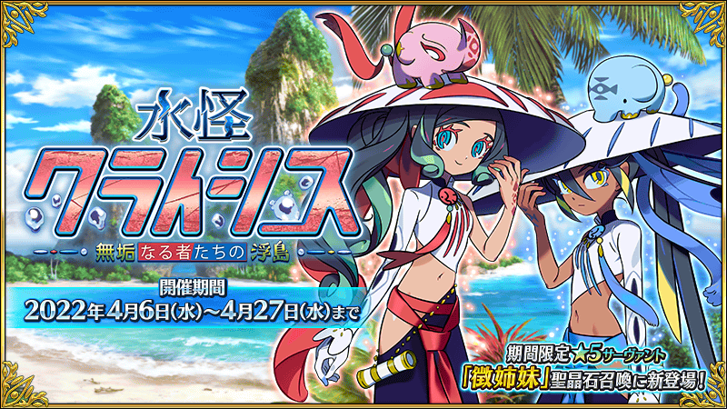
【4月6日(三) 17:00圖片更新】
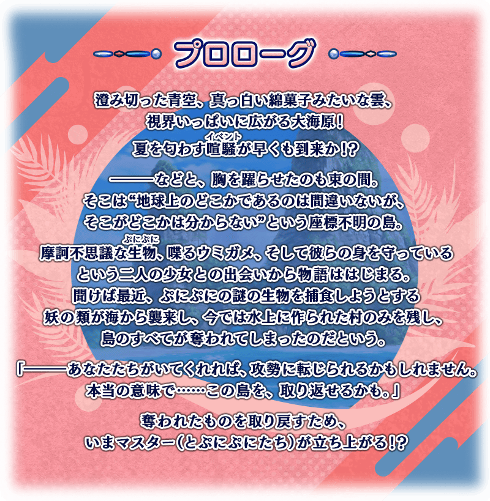
【4月4日(一) 18:00圖片更新】
【4月4日(一) 18:00更新】
舉辦期間限定活動「水怪危機 純潔者們的浮島」！
舞台在座標不明的浮島，為了協助神奇生物“空”一夥的故事就此開幕。
本活動中，享受故事的主線關卡將逐日開放外，通過主線關卡後會開放自由關卡，不僅能收集活動道具還能救出空一夥。
另外，推進活動的話會出現製作關卡。
製作關卡中，借助救出的空一夥之力變得可發展據點。救出更多的空一夥，發展據點來取回被奪走島上領域吧！
根據在製作關卡中製作了什麼，會改變之後文字冒險部份的一部份內容和活動地圖等。
也請盡情享受透過選擇而發展出獨特的島嶼變化！
※本頁面皆為開發中圖片。會有與實際圖片相異的情況。 ※一部份的關卡為日後開放。
◆活動舉辦期間◆
2022年4月6日(三) 17:00～4月27日(三) 11:59
◆活動參加條件◆
滿足以下條件的御主才能參加
・通過第2部 第2章「Lostbelt No.2 無間冰焰世紀 諸神黃昏 不滅之火的好漢」
※不需要通過亞種特異點(從Ⅰ到Ⅳ)。
注意
本活動包含有關第2部 第6章 阿瓦隆・勒菲的一部份劇透內容。
關於未通過到第2部 第6章 阿瓦隆・勒菲而參加本活動的玩家，請理解包含一部份劇透來參加。
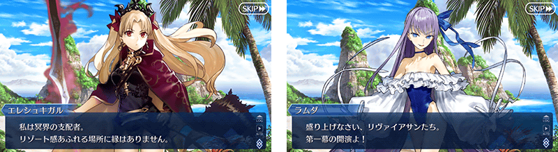
※在2018年12月31日(二) 23:00以後新配信的主線故事及期間限定活動、一部份關卡、宣傳活動及召喚中，會顯示隱藏真名的對象從者真名。
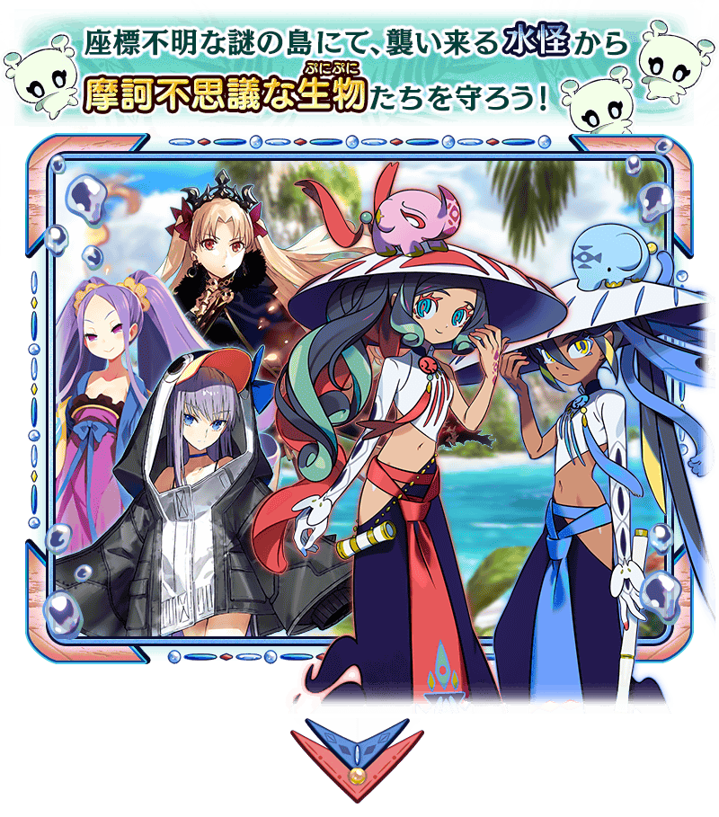 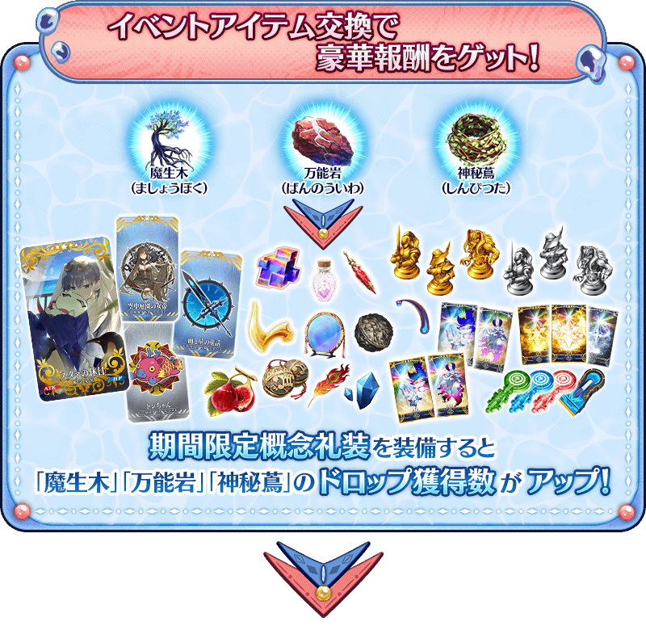 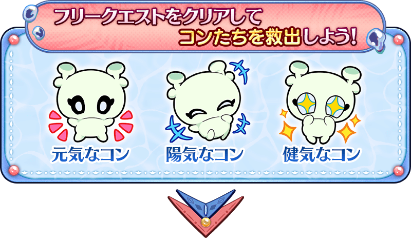 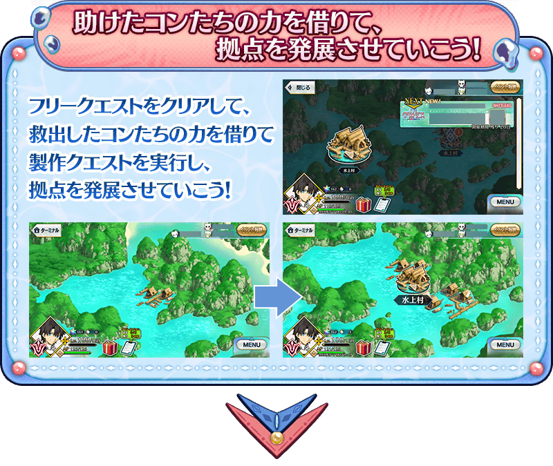 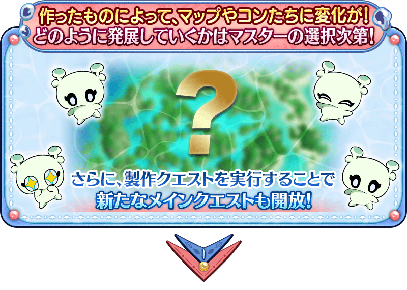
享受故事的主線關卡會逐日開放。
通過主線關卡第1節的話，會開放收集活動道具的自由關卡。
之後的自由關卡是藉由通過主線關卡來開放。
【關卡的舉辦期間】
| 關卡的種類 | 舉辦期間 |
|---|---|
|
序幕(プロローグ) 主線關卡第1節～第4節 製作關卡 自由關卡 |
2022年4月6日(三) 17:00～ 4月27日(三) 11:59 |
|
主線關卡第5節～第6節 製作關卡 自由關卡 |
2022年4月7日(四) 17:00～ 4月27日(三) 11:59 |
|
主線關卡第7節 製作關卡 自由關卡 |
2022年4月8日(五) 17:00～ 4月27日(三) 11:59 |
|
主線關卡第8節～第9節 製作關卡 自由關卡 |
2022年4月9日(六) 17:00～ 4月27日(三) 11:59 |
|
主線關卡第10節～第11節 製作關卡 自由關卡 |
2022年4月10日(日) 17:00～ 4月27日(三) 11:59 |
|
主線關卡第12節 製作關卡 自由關卡 |
2022年4月11日(一) 17:00～ 4月27日(三) 11:59 |
|
主線關卡第13節～第14節 製作關卡 自由關卡 |
2022年4月12日(二) 17:00～ 4月27日(三) 11:59 |
|
主線關卡第15節～後記(エピローグ) 製作關卡 自由關卡 |
2022年4月13日(三) 17:00～ 4月27日(三) 11:59 |
※自由關卡是通過主線關卡後開放。
與空一夥合力發展據點！
推進本活動的主線關卡後，會出現用來發展據點的「製作關卡」。
跟在通過自由關卡後可救出的「活力的空」「開朗的空」「堅強的空」一夥進行合作，能製作發展據點所需的各式各樣東西。
通過製作關卡來取回島上領域的話，會開放新的主線關卡！
※施行製作關卡的話，未選擇的剩餘製作關卡會消失。
※通過後記(エピローグ)後，會出現可重置製作關卡的關卡。
進行重置製作關卡的話，變得可重新選擇其他的製作關卡。
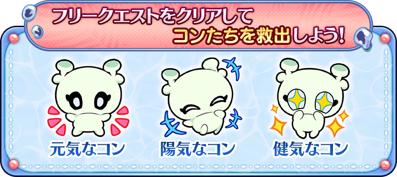 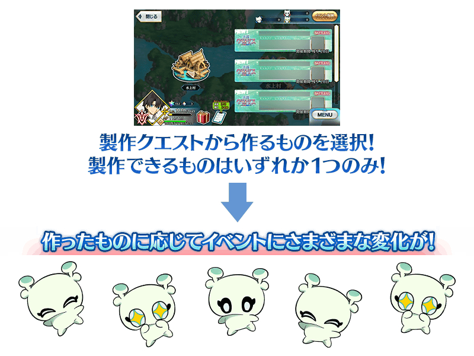
關於製作關卡的重置
在通過本活動的後記(エピローグ)後，會出現可重新製作關卡的重置關卡。進行重置製作關卡的話，可享受不同的文字冒險部份和地圖的變化。
※敬請注意就算進行重置的情況，也不會退回已經消耗的活動道具。
【4月14日(四) 17:00更新】
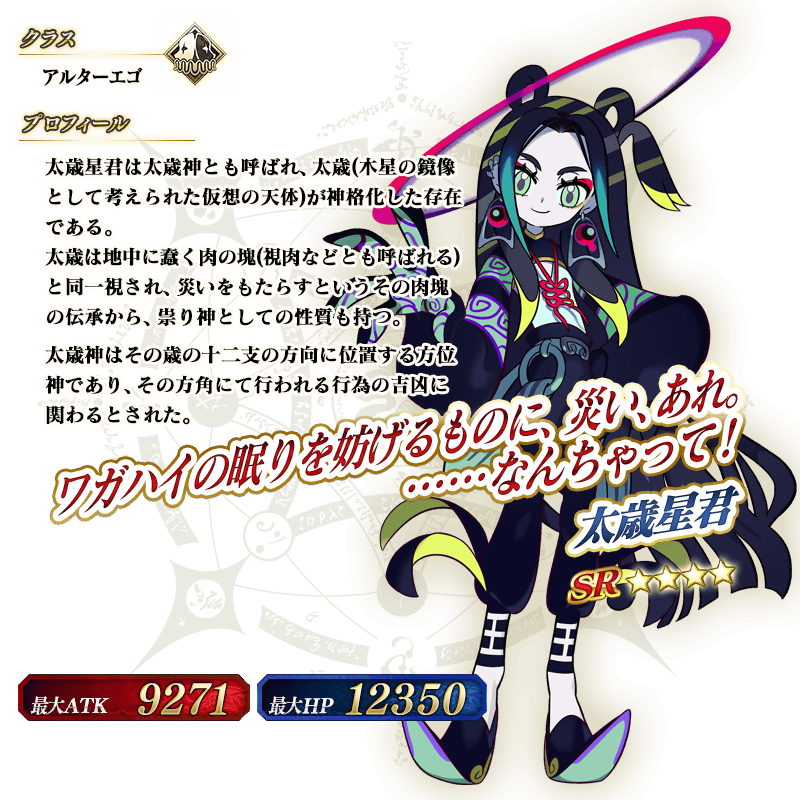
◆靈基再臨◆
使用能靠活動道具交換入手的「粉絲１號之證」，重複4次靈基再臨的話，卡面會有所變化！
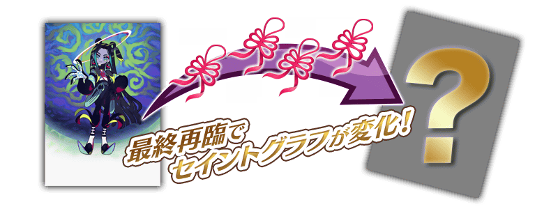
※「★4(SR)太歲星君」不會隨靈基再臨使戰鬥角色的外觀變化。
◆關於「★4(SR)太歲星君」的從者硬幣◆
「★4(SR)太歲星君」的從者硬幣在本活動中可在活動道具交換入手。
・活動道具交換:最多480枚
【4月14日(四) 17:00更新】
介紹「★4(SR)太歲星君」的寶具演出！
【4月14日(四) 17:00更新】
本活動的期間中，「★4(SR)太歲星君」時的獲得經驗值變成2倍。
是讓成為活動加成對象的「★4(SR)太歲星君」等級一口氣上升的機會！
◆舉辦期間◆
2022年4月13日(三) 17:00～4月27日(三) 11:59
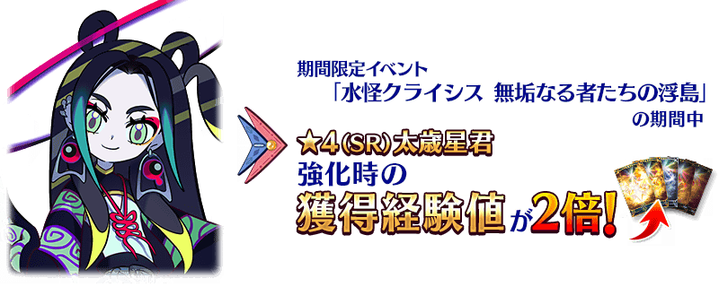
【4月13日(三) 17:00追記】
以通過期間限定活動「水怪危機 純潔者們的浮島」後記(エピローグ)的御主做為對象，開放高難易度的「挑戰關卡」。
「挑戰關卡」就算通過後也不會消失，可以變更從者和概念禮裝的組合等後無限次挑戰。
※關卡通過報酬、戰利品、御主EXP、魔術禮裝EXP、絆點數只可在初次通過時獲得。
◆挑戰關卡開放時間◆
2022年4月13日(三) 17:00～
◆挑戰關卡參加條件◆
滿足以下條件的御主才能參加
・通過期間限定活動「水怪危機 純潔者們的浮島」的後記(エピローグ)
◆挑戰關卡初次通過報酬◆
傳承結晶 1個
超值攻略方法・其1
本活動的期間中，下表的從者在活動關卡中會得到「空一夥的獲得數提升」與 「自身的攻擊威力提升」與「絆點數獲得量提升」的加成！
※活動加成的效果量因從者而異。 ※瑪修・基利艾拉特的「絆點數獲得量提升」效果，是所謂「我方全體含候補的絆點數獲得量提升」的效果。支援時此效果無效。
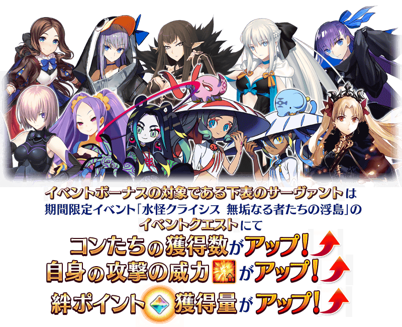
【4月14日(四) 17:00更新】
【活動加成的效果量與對象從者】
| 自身的 攻擊威力 |
絆點數 獲得量 |
職階 | 稀有度 | 從者名 |
|---|---|---|---|---|
| ＋100% | 只限自身 ＋50% |
Saber | ★★★★★ | 徵氏姐妹 |
| Alterego | ★★★★ | 太歲星君 | ||
| ＋50% | 只限自身 ＋20% |
Lancer | ★★★★★ | 艾蕾修卡 |
| ★★★★ | 謎之Alterego・Λ | |||
| Rider | ★★★★★ | 李奧納多・達・文西 | ||
| Assassin | ★★★★★ | 賽米拉米斯 | ||
| ★★★★ | 武則天(不夜城的Assassin) | |||
| Berserker | ★★★★★ | 摩根 | ||
| Alterego | ★★★★★ | Meltryllis | ||
| 我方全體 ＋5% |
Shielder | ★★★ | 瑪修・基利艾拉特 |
【4月14日(四) 17:00更新】
【獲得數提升的空一夥與對象從者】
| 空的獲得數 | 職階 | 稀有度 | 從者名 | |
|---|---|---|---|---|
|
|
活力的空+1
開朗的空+1
堅強的空+1
|
Saber | ★★★★★ | 徵氏姐妹 |
| Alterego | ★★★★ | 太歲星君 | ||
|
|
活力的空+1
|
Lancer | ★★★★★ | 艾蕾修卡 |
| ★★★★ | 謎之Alterego・Λ | |||
| Rider | ★★★★★ | 李奧納多・達・文西 | ||
| Berserker | ★★★★★ | 摩根 | ||
|
開朗的空+1
|
Alterego | ★★★★★ | Meltryllis | |
| Shielder | ★★★ | 瑪修・基利艾拉特 | ||
|
堅強的空+1
|
Assassin | ★★★★★ | 賽米拉米斯 | |
| ★★★★ | 武則天(不夜城的Assassin) | |||
【4月14日(四) 17:00更新】
※就算成為對象從者也會有未在本活動的主線劇本登場的情況。
超值攻略方法・其2
本活動的期間中，上述以外的所有從者對應職階「活力的空」「開朗的空」「堅強的空」其一的獲得數會提升。
【獲得數提升的空一夥與對象職階】
| 空的獲得數 | 職階 | |
|---|---|---|
|
|
活力的空+1
|
Lancer Rider Berserker MoonCancer Foreigner |
|
開朗的空+1
|
Archer Caster Ruler Alterego |
|
|
堅強的空+1
|
Saber Assassin Avenger Pretender |
|
超值攻略方法・其3
裝備活動限定概念禮裝與期間限定概念禮裝的話，在活動中會受到各式各樣的恩惠。
裝備可靠活動道具交換入手的「★5(SSR)スタァの休日」的話，在期間限定活動「水怪危機 純潔者們的浮島」中「活力的空」「開朗的空」「堅強的空」的獲得數會提升。
並且，裝備在聖晶石召喚Pick Up的期間限定概念禮裝「★5(SSR)幽冥娘娘」「★4(SR)虎視眈々」「★3(R)天下往来」的話，活動道具「魔生木」「萬能岩」「神秘蔦」各自的掉落獲得數會提升。
※請注意各關卡的道具掉落率並非100％。
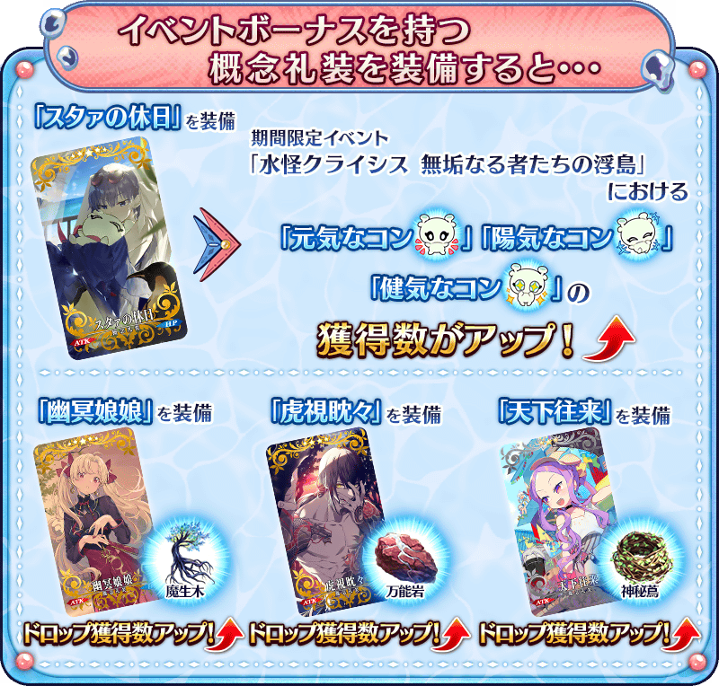
【4月6日(三) 17:00追記】
| 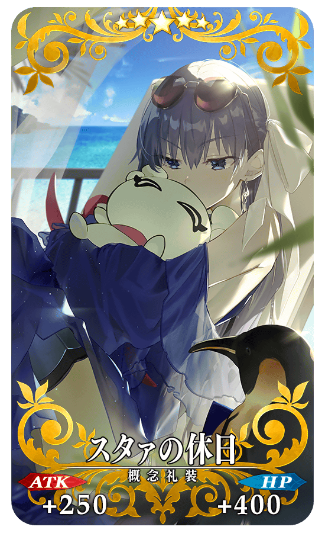 |
★★★★★SSR
|
【4月6日(三) 17:00追記】
| 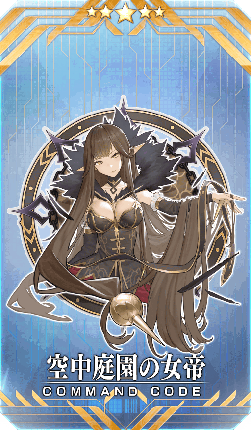 |
【活動限定】 |
| 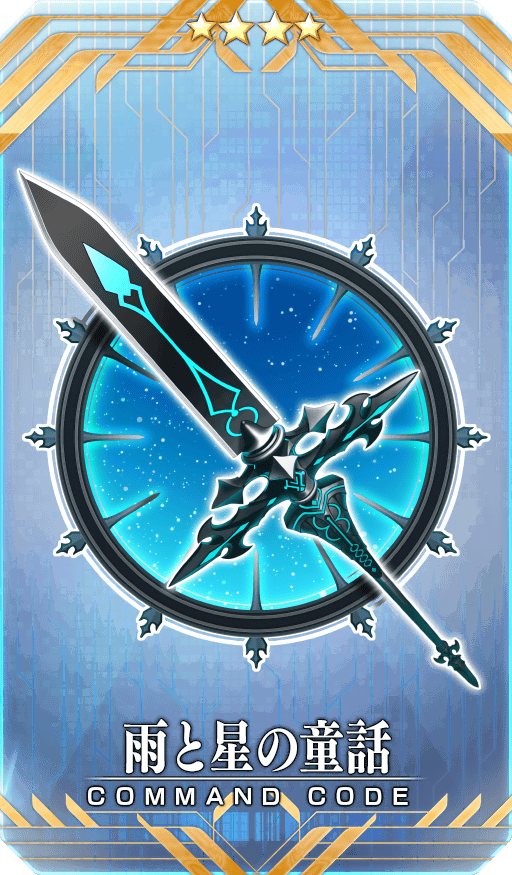 |
★★★★SR |
| 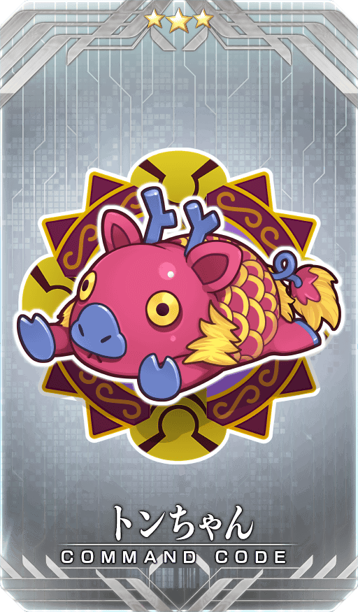 |
★★★R |
【4月14日(四) 17:00追記】
活動道具可自點擊管理室(ターミナル)畫面右上「活動報酬」鍵所顯示的「活動道具交換」畫面，交換以下的道具。
※關於傳承結晶、英靈結晶・流星之芙芙ALL★4(HP)、英靈結晶・日輪之芙芙ALL★4(ATK)、活動限定從者「★4(SR)太歲星君」的靈基再臨素材及從者硬幣，在通過本活動的主線關卡後才能交換。 ※活動限定從者「★4(SR)太歲星君」的靈基再臨素材及從者硬幣，在通過本活動的主線關卡後才會顯示。 ※活動道具交換期間結束後「魔生木」「萬能岩」「神秘蔦」「活力的空」「開朗的空」「堅強的空」會消失。 ※「活力的空」「開朗的空」「堅強的空」在活動期間結束後可交換成QP。
◆交換期間◆
2022年4月6日(三) 17:00～5月4日(三) 11:59
◆能用魔生木交換的道具◆
| 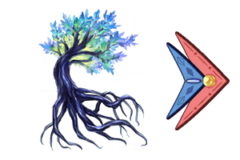 |
【活動限定概念禮裝】 【活動報酬指令紋章】 【技能強化＆靈基再臨素材】 【靈基再臨素材】 【其他道具】 |
◆能用萬能岩交換的道具◆
| 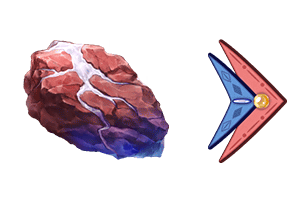 |
【活動限定概念禮裝】 【活動報酬指令紋章】 【技能強化＆靈基再臨素材】 【靈基再臨素材】 【其他道具】 |
◆能用神秘蔦交換的道具◆
|
【活動限定概念禮裝】 【活動報酬指令紋章】 【技能強化＆靈基再臨素材】 【其他道具】 |
【4月14日(四) 17:00追記】
◆能用活力的空交換的道具◆
|
【活動限定從者靈基再臨素材】 【從者硬幣】 |
◆能用開朗的空交換的道具◆
|
【活動限定從者靈基再臨素材】 【從者硬幣】 |
◆能用堅強的空交換的道具◆
|
【活動限定從者靈基再臨素材】 【從者硬幣】 |

在2019年舉辦的期間限定活動「拜見！ 拉斯維加斯御前比試～泳裝劍豪七色決勝！」及在2020年舉辦的「復刻:拜見！ 拉斯維加斯御前比試～泳裝劍豪七色決勝！ 輕量版」中登場的「★4(SR)謎之Alterego・Λ」簡易靈衣「冰霜名流」開放權在達文西工房的「靈衣縫製」追加！
用稀有稜鏡2個交換後，可入手上述靈衣開放權。
並且，有通過「深海電腦樂土 SE.RA.PH」終幕的情況就可免費交換簡易靈衣「冰霜名流」開放權！
另外，想靈衣開放的話，除了靈衣開放權外再加上必須滿足一些開放條件。
◆追加時間◆
2022年4月6日(三) 17:00～
◆交換條件◆
滿足以下條件的御主才能交換
・通過「特異點F 炎上汙染都市 冬木」
・未入手簡易靈衣「冰霜名流」開放權
※追加到「靈衣縫製」的簡易靈衣「冰霜名流」開放權為永久，沒有交換期限。 ※關於已經取得交換對象靈衣開放權的玩家，無法交換。 ※在用稀有稜鏡2個交換簡易靈衣「冰霜名流」開放權後達成免費化條件的情況，會返還交換使用的稀有稜鏡2個到禮物箱。
◆靈衣開放權交換免費化的條件◆
滿足以下條件的御主才能免費交換
・通過主線分支「深海電腦樂土 SE.RA.PH」的終幕
・通過特別活動「復刻版:深海電腦樂土 SE.RA.PH -Second Ballet-」的終幕(2019年3月舉辦)
・通過特別活動「深海電腦樂土 SE.RA.PH」的終幕(2017年5月舉辦)
◆有關靈衣開放權的注意◆
※「★4(SR)謎之Alterego・Λ」的簡易靈衣會隨著外觀變化在個人空間(マイルーム)播放的一部份語音。
※請注意未持有「★4(SR)謎之Alterego・Λ」的情況，可入手靈衣開放權。但無法進行靈衣開放。
◆追加道具(永久)◆
| 追加道具 | 能交換次數 | 1次交換所需的 稀有稜鏡數 |
|---|---|---|
| 簡易靈衣「冰霜名流」開放權 | 1次 |
2個 有通過「深海電腦樂土 SE.RA.PH」終幕的情況就能免費交換！ |


「靈衣開放」是自強化畫面進行。
※「靈衣開放」後會自動切換戰鬥角色和圖示。若想回到「靈衣開放」前的狀態和變成其他再臨階段的情況，可自從者詳細畫面變更。 ※進行「靈衣開放」不會讓職階和能力等有所變化。

介紹開放簡易靈衣「冰霜名流」的「★4(SR)謎之Alterego・Λ」寶具演出！
【4月6日(三) 17:00追記】
強化「★4(SR)武則天(不夜城的Assassin)」的特別關卡「從者強化關卡」，在迦勒底之門永久追加。
不僅進行對象從者的強化，也可獲得聖晶石做為關卡通過報酬。
※請注意在從者強化關卡沒有文字冒險部份。
◆追加時間◆
2022年4月6日(三) 17:00～
◆開放條件◆
持有最終再臨的強化對象從者，必須有真名判明。
※未持有對象從者的話，不會出現關卡。
※關卡沒有舉辦期限。
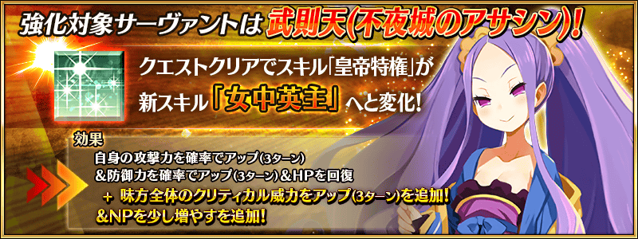
【4月13日(三) 17:00追記】
其他還有，
・水怪危機 徵氏姐妹Pick Up召喚
・水怪危機 摩根Pick Up召喚
以期間限定舉辦中！
關於詳情，請自下述橫幅確認。
■「水怪危機 徵氏姐妹Pick Up召喚」詳細情報

■「水怪危機 摩根Pick Up召喚」詳細情報